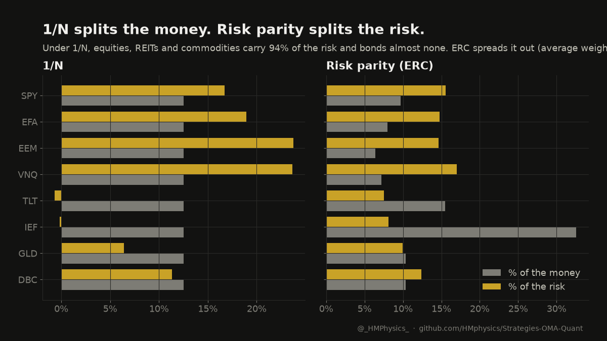
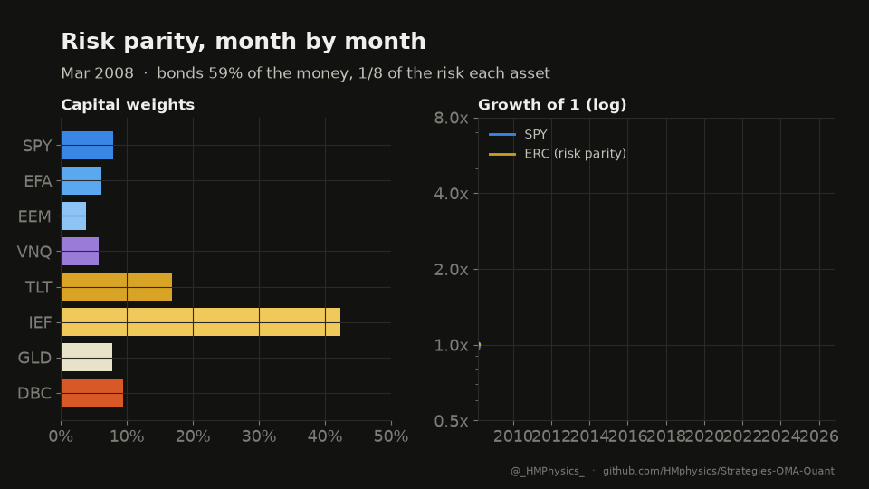
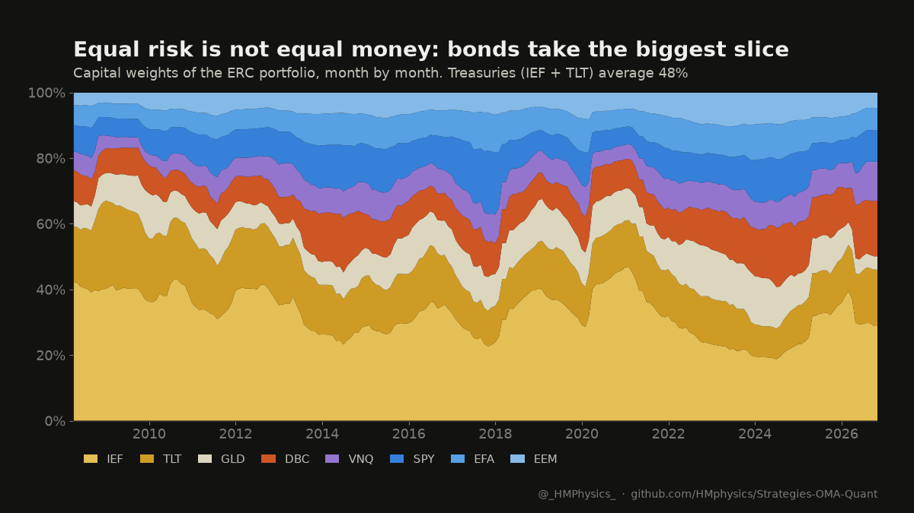
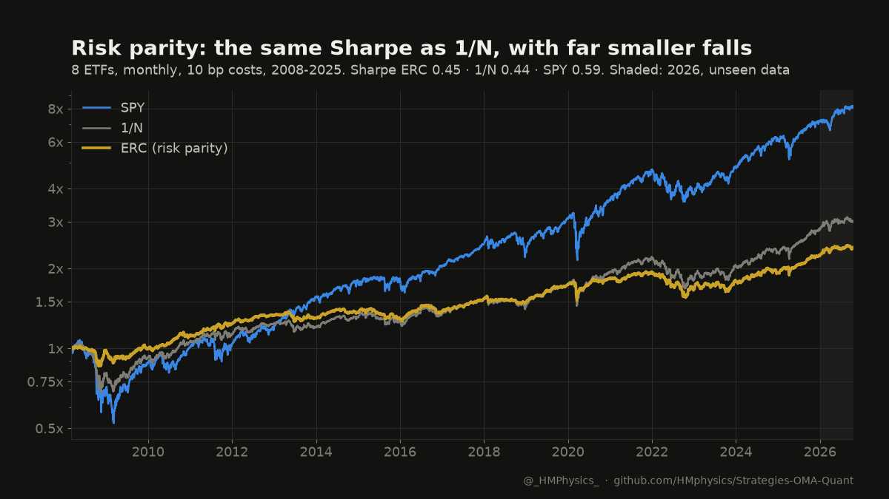
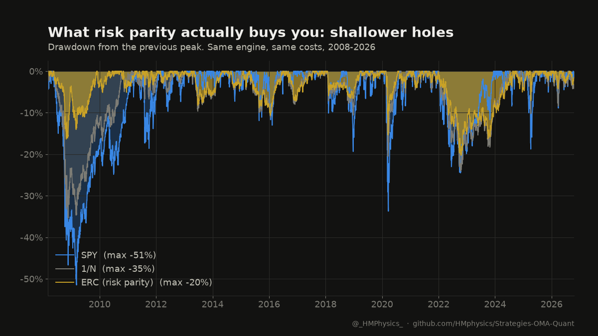
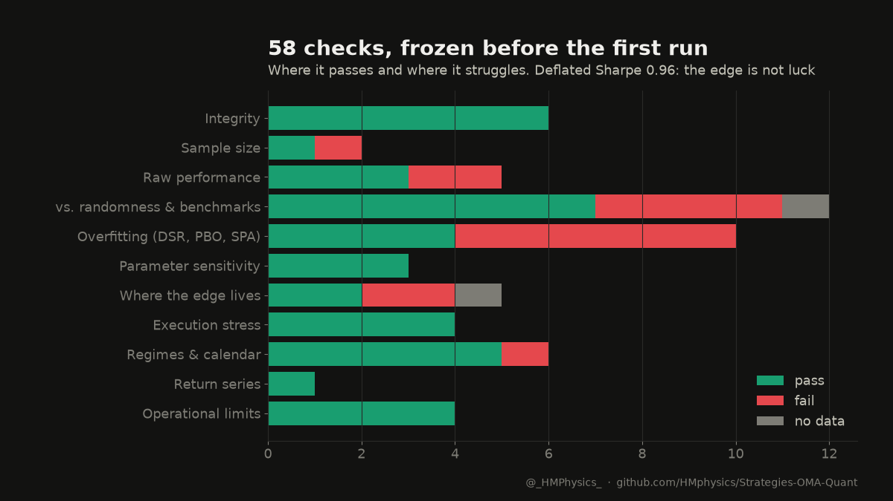

216 Quant Books · Book 1 · Strategy 1 of the series
From Daniel P. Palomar's Portfolio Optimization: Theory and Application (Cambridge, 2025). Split the risk, not the money, and see if that is enough to make a strategy.
Sample 3 March 2008 to 31 December 2025 (4,488 sessions), 10 bp per side, monthly rebalance, long only, no leverage. Same engine and costs for every line.
How it plays
Put 1/8 of your money in each of SPY, EFA, EEM, VNQ, TLT, IEF, GLD and DBC and you think you're diversified. You aren't: equities, real estate and commodities end up carrying almost all of the risk, and the bonds barely register.
Risk parity flips the question. Every month it looks at the last year of daily returns, estimates how volatile each asset is and how they move together, and solves for the weights where each asset contributes the same share of total risk. No return forecasts at all, which is the whole appeal: expected returns are the hardest thing in finance to estimate.
The consequence is mechanical. Calm assets get more money. Treasuries average 48% of the capital, emerging markets a few percent.



The record


| Portfolio | Sharpe | CAGR | Vol | Max DD | 2026 Sharpe | 2026 Max DD |
|---|---|---|---|---|---|---|
| Risk parity (ERC) | 0.46 | 4.6% | 7.8% | −20.3% | 0.77 | −4.3% |
| Inverse volatility | 0.44 | 4.9% | 8.9% | −22.7% | 0.59 | −4.8% |
| 1/N | 0.44 | 5.9% | 11.7% | −35.4% | 0.45 | −8.4% |
| Hierarchical risk parity | 0.39 | 3.7% | 6.8% | −19.3% | −0.19 | −4.2% |
| Minimum variance, long only | 0.38 | 3.3% | 5.6% | −18.6% | 0.12 | −2.9% |
| SPY, buy and hold | 0.59 | 11.7% | 19.9% | −51.5% | 0.98 | −8.9% |
2008–2025 sample unless marked. 2026 runs from January to 19 October. Sharpe is over the T-bill rate.
What the engine checked
YGGDRASIL is the audit engine behind this series. It doesn't hunt for the best-looking curve. The rules and the pass thresholds were written down and hashed before a single backtest ran, and every variant we looked at counts against us.

The verdict
Risk parity does what it promises: the same return per unit of risk as splitting your money evenly, with half the pain. As a base layer for someone who can't sit through a −50% year, it makes sense.
As a strategy, we don't like it. The Sharpe is real but small, it trails a plain index fund by 7 points a year, and the only way to fix that is leverage on bonds, which turns a calm portfolio into a bet on interest rates. YGGDRASIL rejects it, and we agree.